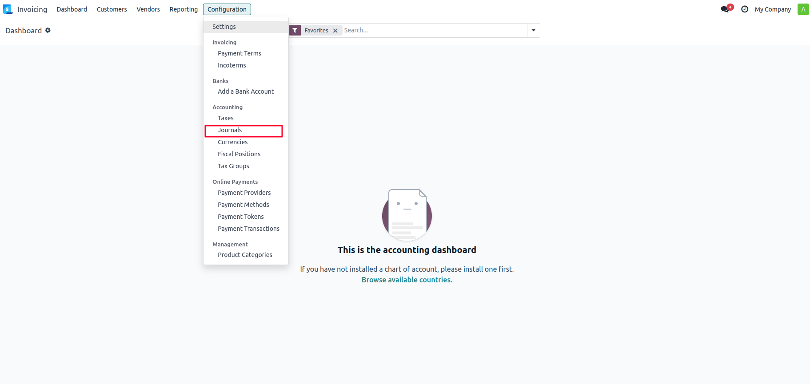
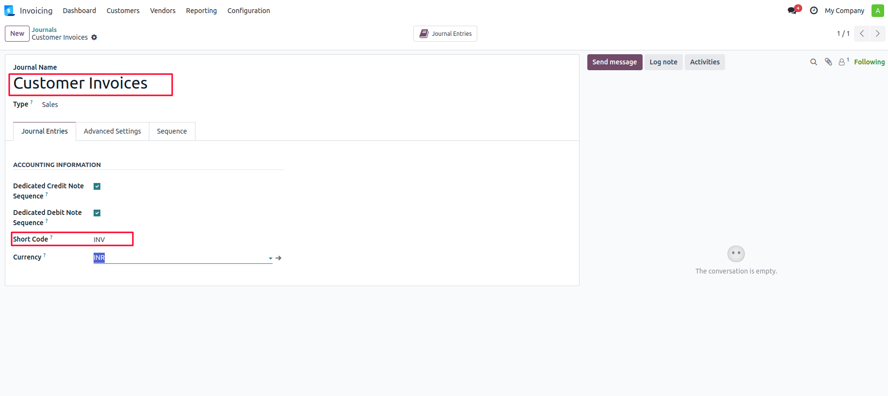
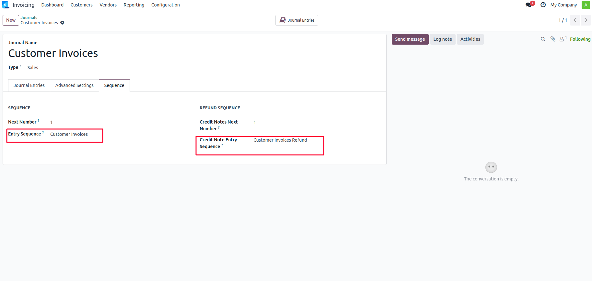
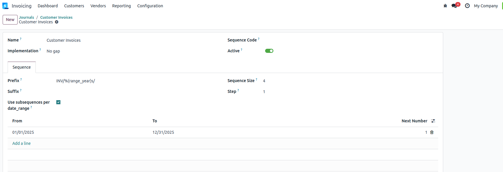

Purpose: This module enables unique and independent sequence numbers for each journal (e.g., Sales Journal, Purchase Journal, Bank Journal), ensuring better traceability and compliance with accounting/audit standards. It overrides the default behavior where all journal entries share a common sequence.




When a journal entry is created, the system uses the journal-specific sequence defined in that journal. The default company-wide sequence is bypassed for journals with a custom sequence configured. If no sequence is defined for a journal, Odoo falls back to the default sequence.
1.Go to Accounting Configuration and select Journals
2.Open any journal (e.g., Sales Journal).
3.In the Journal Entries Sequence field, create or select a unique sequence.
4.Save and test by creating journal entries.
✅ Complies with regional audit and tax requirements (e.g., India, UAE, EU). ✅ Reduces confusion and improves reporting accuracy. ✅ Supports cleaner segregation of accounting operations.
Developed by Apagen Solutions